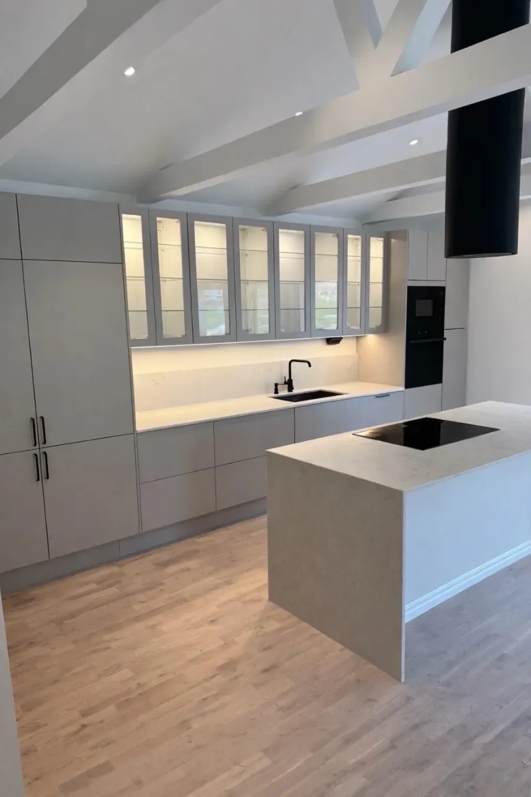
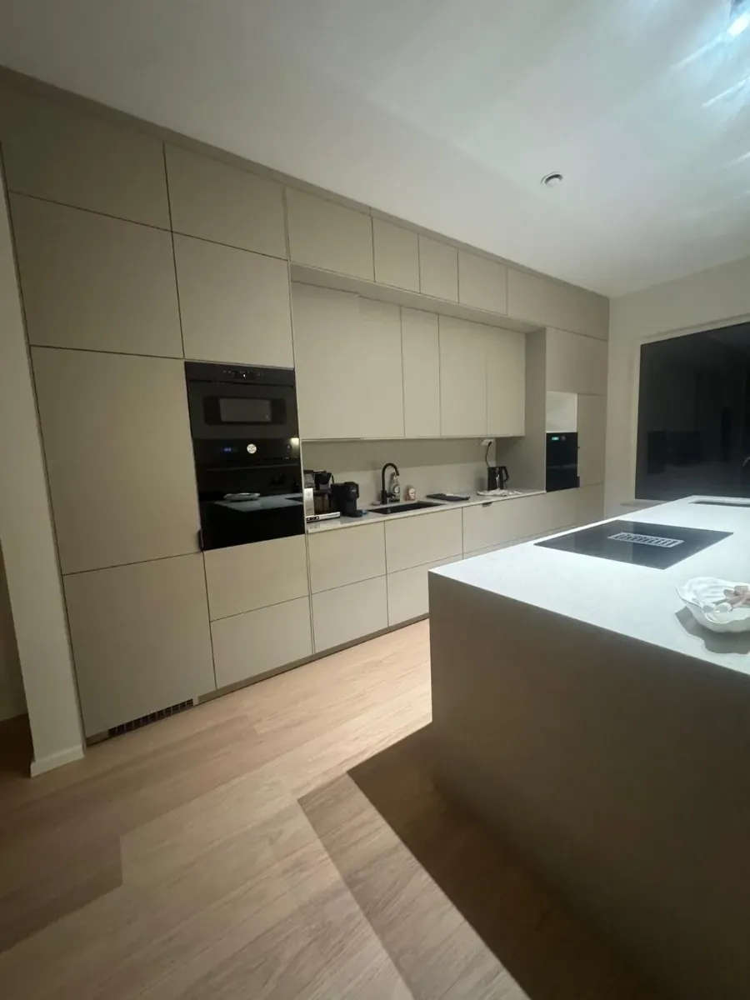
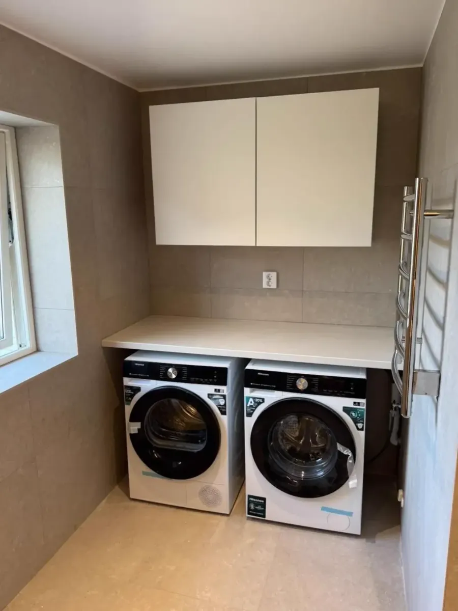
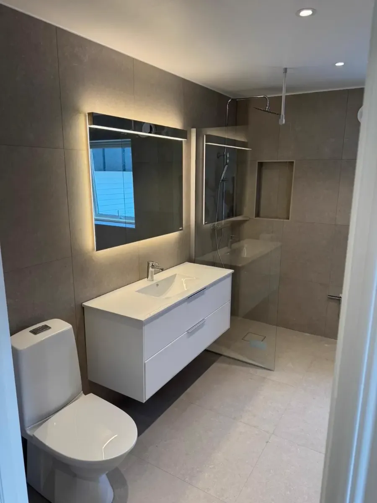
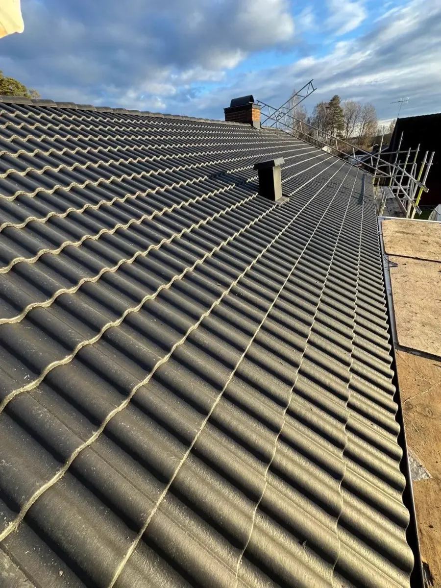
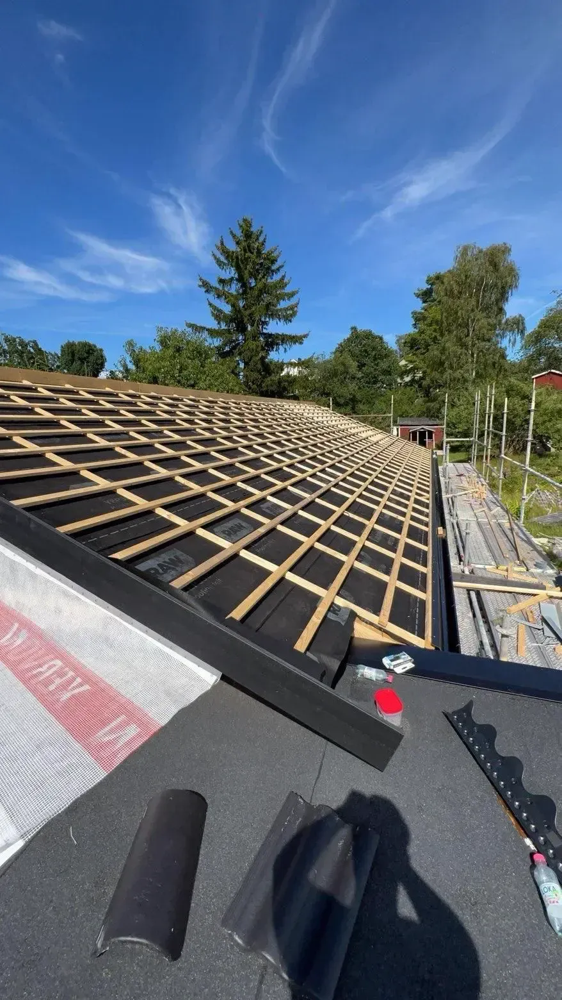
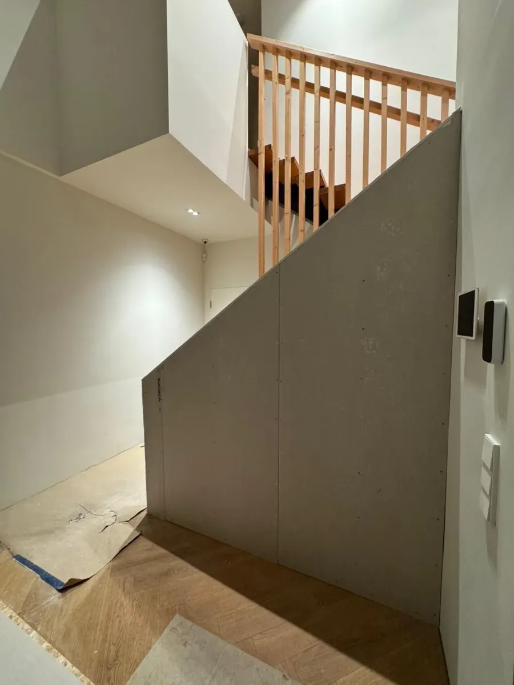
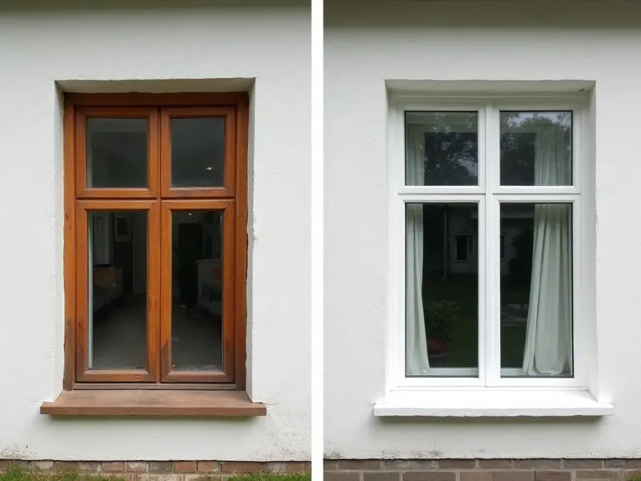

Egna bilder. Verkliga arbeten.
Byggt av VN.
Kök, badrum, tak och snickeri. Upptäck ett urval av våra arbeten och hitta inspiration till ditt eget projekt.
10 projekt

KöksrenoveringKök med Glasskåp & Takbalkar
Norrköping · 2025
KöksrenoveringBeige Kök med Inbyggda Vitvaror
Norrköping · 2025 Badrumsrenovering
BadrumsrenoveringBadrum med Dubbelhandfat
Norrköping · 2025
TvättrumModernt Tvättrum
Norrköping · 2025
BadrumsrenoveringBadrumsrenovering i Linköping
Linköping · 2024
TakläggningNylagt Tak med Takpannor
Norrköping · 2025 Takrenovering
TakrenoveringTakrenovering av två hus
Norrköping · 2024
TakbyteKomplett Takbyte
Norrköping · 2024
ByggnationTrappkonstruktion
Norrköping · 2025
FönsterbyteFönsterbyte i Linköping
Linköping · 2024Inga projekt matchade din sökning.
Ska vi skapa något tillsammans?
Du har en idé.
Vi hjälper dig vidare.
Stort eller litet, färdig plan eller första tanke.
Börja med ett samtal med Viktor eller Nico.